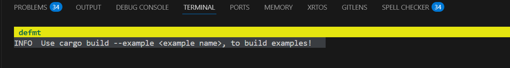

Introduction
Learning embedded rust has been quite the frustrating experiance for me, a lot of outdated documentation. Therefor, I intend to expand that pile!
This is a guide on how to do embedded rust on the NUCLEO-F401RE, using embedded HAL and defmt. If you are using a different microcontroller or debugger, you are out of luck, sorry not sorry!
The book is broken up into a set-up, some examples of common tasks and hopefully some deep-dives in the future!.
Set-up
Assumptions
You already have installed rust and VS Code. Maybe Windows 11.
Software
Install the rust tool chain
rustup install stable
rustup component add rust-src llvm-tools-preview
Install ARM Cortex-M target for STM32F4 series (Cortex-M4F with floating point unit (FPU))
rustup target add thumbv7em-none-eabihf
Install Probe-RS as our debugger probe.
cargo install probe-run
cargo install flip-link defmt-cli
Install cargo tools for embedded use
cargo install cargo-embed
I also recommend installing the following VS Code Extentions:
- rust-analyzer
- probe-rs-tools
Hardware
You will need a ST NUCLEO-F401RE, is equivalent.
Examples
Here is a list of examples to show how to do most basic stuff in embedded rust.
These examples are available on my Github Repo, stm32f4-rs-examples, and can be cloned with:
git clone https://github.com/Eirik2020/stm32f4-rs-examples.git
Then opened with:
code stm32f4-rs-examples
General Purpose IO
This chapter covers GPIO, and some common applications.
Hello World! In embedded rust!
To print hello world to the user, we need a way to send serial messages, in this case we use the debugger probe-rs with defmt. You might say, but what about other debuggers like GBD or openOCD? My answer is no, here we are going full rust, or get scuffed.
Add the debugger to our dependencies in Cargo.toml:
Cargo.toml
[dependencies]
defmt = "1.0.1"
defmt-rtt = "1.0.0"
panic-probe = { version = "1.0.0", features = ["print-defmt"] }
Then we import the debugger into our main function, and use info! to to send a message to the terminal:
main.rs // Import defmt debugger use defmt::*; // Debugger use defmt_rtt as _; // Use defmt as global rtt logger use panic_probe as _; // Panic handler with defmt support #[entry] fn main() -> ! { // Use info! to print a message to the terminal. info!("Hello World!"); loop {} }
Complete Example
Here is a complete code example, it is the default example, and can be run with:
$ cargo build
$ cargo embed
#![deny(unsafe_code)] #![no_main] #![no_std] // Crates use cortex_m_rt::entry; // ARM dependencies for cortex-m architecture use stm32f4xx_hal as _; // STM32F4 series HAL crate // Debugger use defmt::*; use defmt_rtt as _; // Global logger use panic_probe as _; // Panic handler with defmt support // MAIN #[allow(clippy::empty_loop)] #[entry] fn main() -> ! { info!("Use cargo embed --example <example name>, to build examples!"); loop {} }
Don't forget to have you STM32F4 connected! A terminal should open and look like this: 
Blinky
Blinky will be our first attempt at using the STM32F4 HAL crate. We use this crate to access the peripherals of the STM32, safely wrapped in rust.
From the STM32F4 HAL we import the Peripheral Access Crate (PAC) and the preludes. The preludes import some generics and traits for embedded HAL that saves us some typing. The PAC is how we access the peripherals of the microcontroller unit (MCU).
#![allow(unused)] fn main() { use stm32f4xx_hal::{ pac::{self}, prelude::*, }; }
What is a PAC?
Peripheral Access Crate (PAC) is how we access the peripherals of the microcontroller unit (MCU). To use the peripherals, we need to assign ownership of the device peripherals. This is required in rust to manage memory.
#![allow(unused)] fn main() { let dp = pac::Peripherals::take().unwrap(); }
From the device peripherals, we split out the struct gpioa, which is the GPIO group A on the microcontroller. We can see in the datasheet that this group contains pins 0-15 (PA0-15).
#![allow(unused)] fn main() { let gpioa = dp.GPIOA.split(); }
We can assign a single pin to a variable and configure it, in this case we want to configure it into a push/pull output, to either connect our LED to power or ground.
#![allow(unused)] fn main() { let mut LD1 = gpioa.pa5.into_push_pull_output(); }
Now that we have configured PA5 into a push/pull output with the name LD1, which correspondes with the LD1 LED on the ST NucleoF401RE board. We probably want to do something with it right? We can turn it off, with the following commands:
#![allow(unused)] fn main() { LD1.set_low(); LD1.set_high(); }
We also want it to blink, we can use cortex_m::asm::delay(8_000_000);, this simply pauses the program for 8 000 000 million clock cycles, and since our clock runs at 8MHz, that equates to 1 second.
By adding a conversion factor, we can use milliseconds instead, giving us a simple blinky program:
#![allow(unused)] fn main() { // Clock-cycles to millisecond conversion factor let ms: u32 = 8_000; loop { // Wait 500ms cortex_m::asm::delay(500 * ms); // Turn on LED LD1 LD1.set_high(); // Wait 500ms cortex_m::asm::delay(500 * ms); // Turn off LED LD1 LD1.set_low(); } }
Complete Example
Here is a complete code example, it is the default example, and can be run with:
$ cargo embed --example blinky
// ========================== Embedded Rust Set-up ========================== #![deny(unsafe_code)] #![no_main] #![no_std] // Imports use defmt::*; use defmt_rtt as _; // Global logger use panic_probe as _; // Panic handler with defmt support use cortex_m_rt::entry; use stm32f4xx_hal::{ pac::{self}, prelude::*, }; #[allow(non_snake_case)] #[allow(clippy::empty_loop)] #[entry] fn main() -> ! { // ========================== Set-up ========================== // Take ownership of device peripherals and split out GPIO group A and B let dp = pac::Peripherals::take().unwrap(); let gpioa = dp.GPIOA.split(); // Configure pins let mut LD1 = gpioa.pa5.into_push_pull_output(); LD1.set_low(); // Calculate conversion factor from clock cycles to ms, assuming 8 MHz let ms: u32 = 8_000; // ========================== LOOP ========================== loop { // Wait 500ms cortex_m::asm::delay(500 * ms); // Turn on LED LD1 LD1.set_high(); // Wait 500ms cortex_m::asm::delay(500 * ms); // Turn off LED LD1 LD1.set_low(); } }
Buten Controlled Light
Being able to have some inputs would be nice right? So lets try controlling the LED with the on-board button. Just like in the blinky example, we need to split out of peripherals. We also split out GPIO group C, since the on-board button B1, is connected to pin 13 in group C, PC13.
#![allow(unused)] fn main() { let dp = pac::Peripherals::take().unwrap(); let gpioa = dp.GPIOA.split(); let gpioc = dp.GPIOC.split(); }
We then assign PC13 to B1. Notice here we don't need to declare B1 a mutable variable, since we only read data from it. (If we wanted to write to it, we had to make it mutable).
We then check if B1 is true (high) using .is_low(), and set our LED LD1 high if it is.
#![allow(unused)] fn main() { let B1 = gpioc.pc13; loop { // Check if button is pressed if B1.is_low() { LD1.set_high(); // Turn ON LED } else { LD1.set_low(); // Turn OFF LED } } }
Complete Example
Here is a complete code example and can be run with:
$ cargo embed --example buten
// ========================== Embedded Rust Set-up ========================== #![deny(unsafe_code)] #![no_main] #![no_std] // Imports use defmt_rtt as _; // Global logger use panic_probe as _; // Panic handler with defmt support use cortex_m_rt::entry; use stm32f4xx_hal::{ pac::{self}, prelude::*, }; #[allow(non_snake_case)] #[allow(clippy::empty_loop)] #[entry] fn main() -> ! { // ========================== Set-up ========================== // Take ownership of device peripherals and split out GPIO group A and B let dp = pac::Peripherals::take().unwrap(); let gpioa = dp.GPIOA.split(); let gpioc = dp.GPIOC.split(); // Configure pins let mut LD1 = gpioa.pa5.into_push_pull_output(); LD1.set_low(); let B1 = gpioc.pc13; // ========================== LOOP ========================== loop { // Check if button is pressed if B1.is_low() { LD1.set_high(); // Turn ON LED } else { LD1.set_low(); // Turn OFF LED } } }
(btw, buten is a inside joke, I am not illiterate)
Dimming a LED using PWM
Now lets try ourselvs at something a bit more advanced. A LED that is dimmed with the help of a button. We will dim it using PWM, but before we can do this, we need to configure the clocks and timers, which in turn control our PWM.
We give ownership of the reset and clock control to rcc, from dp.
Then configure(.cfgr) it from a high speed external(use_hse()) clock running at 8 MHz(8.MHz()) and lock the configuration(.freeze()).
#![allow(unused)] fn main() { // Configure clocks let rcc = dp.RCC.constrain(); let clocks = rcc.cfgr.use_hse(8.MHz()).freeze(); }
Now to the juicy part, we actually configure one of our timers (Timer 2, TIM2) for PWM. To do this, we do this:
#![allow(unused)] fn main() { // Configure PWM let (_, (LD1_pwm, ..)) = dp.TIM2.pwm_hz(2000.Hz(), &clocks); }
So what is going on here?
Here we take timer 2(TIM2) from the device peripheral handler(dp), and configure it for PWM with hertz as a input (.pwm_hz()). And set the PWM frequency to 2000 Hz (.Hz()), and use our on-board clock as a reference (&clocks).
Now why do we assign it to (_, (LD1_pwm, ..))?
This is because it returns an array, where the first spot is the PWM controller, which we ignore with (_), then the second spot is all the PWM channels
(LD1_pwm, ..)). The first channel is assigned to LD1_pwm, while we ignore the rest with , ..), it would be the same as putting _ for all the other channels.
Can I do PWM now? No, have patience my child. We have our PWM channel, we now need to assign it to a suitable pin,
so we assign LD1_pwm to pin 5 in GPIO group A (pa5):
#![allow(unused)] fn main() { let mut LD1_pwm = LD1_pwm.with(gpioa.pa5); let max_duty = LD1_pwm.get_max_duty(); LD1_pwm.enable(); }
We also use .get_max_duty() to get the maximum PWM value, and .enable() to enable the channel.
Finally, we can set the PWM duty cycle for PA5, we do this with .set_duty(), and give it a division of max_duty.
In this case divided by 4 or 25% duty cycle.
#![allow(unused)] fn main() { LD1_pwm.set_duty(max_duty / 4); // 25% duty for LED LD1. }
Now lets make it even cooler. Lets have 10 levels (0-100%), controlled by a button!
#![allow(unused)] fn main() { // Initialize counter variable let mut counter = 0; // Calculate conversion factor from clock cycles to ms, assuming 8 MHz let ms: u32 = 8_000; loop { if B1.is_low() { cortex_m::asm::delay(50 * ms); // debounce delay if B1.is_low() { counter = (counter + 1) % 11; // increment and roll over after 10 (0-10 total 11 states) // Wait until button released while B1.is_high() {} } } // Set PWM for LD1 let duty = (max_duty * counter) / 10; // 10 steps (0%, 10%, ..., 100%) LD1_pwm.set_duty(duty); } }
Here we initialize the counter and calculate the clock-cycle to ms factor.
In the main loop we check if our button is pressed(if B1.is_low()), if it is, we wait for 50ms(cortex_m::asm:delay(50*ms)), then if it still is pressed, we increment the counter. The reason for the delay is a quick-and-dirty debounce of the button. To increment to counter from 0-10, we use this counter = (counter + 1) % 11. Then wait for the button to be unpressed (while B1.is_high()), so we don't increment more than once.
Outside the loop, we calculate the desired duty cycle from the counter and apply it to our LED, LD1.
Complete Example
Here is a complete code example and can be run with:
$ cargo embed --example pwm_dimmer
// ========================== Embedded Rust Set-up ========================== #![deny(unsafe_code)] #![no_main] #![no_std] // Imports use defmt_rtt as _; // Global logger use panic_probe as _; // Panic handler with defmt support use cortex_m_rt::entry; use stm32f4xx_hal::{ pac::{self}, prelude::*, }; #[allow(non_snake_case)] #[allow(clippy::empty_loop)] #[entry] fn main() -> ! { // ========================== Set-up ========================== // Take ownership of device peripherals and split out GPIO group A and B let dp = pac::Peripherals::take().unwrap(); let gpioa = dp.GPIOA.split(); let gpioc = dp.GPIOC.split(); // Configure clocks let rcc = dp.RCC.constrain(); let clocks = rcc.cfgr.use_hse(8.MHz()).freeze(); // Configure pins let B1 = gpioc.pc13; // Configure PWM let (_, (LD1_pwm, ..)) = dp.TIM2.pwm_hz(2000.Hz(), &clocks); let mut LD1_pwm = LD1_pwm.with(gpioa.pa5); let max_duty = LD1_pwm.get_max_duty(); LD1_pwm.enable(); // Initialize counter variable let mut counter = 0; // Calculate conversion factor from clock cycles to ms, assuming 8 MHz let ms: u32 = 8_000; // ========================== LOOP ========================== loop { if B1.is_low() { cortex_m::asm::delay(50 * ms); // debounce delay if B1.is_low() { counter = (counter + 1) % 11; // increment and roll over after 10 (0-10 total 11 states) // Wait until button released while B1.is_high() {} } } // Set PWM for LD1 let duty = (max_duty * counter) / 10; // 10 steps (0%, 10%, ..., 100%) LD1_pwm.set_duty(duty); } }
Dimming a LED using a potentiometer
Lets try controlling the brightness of a LED using a potentiometer. To do things we need to measure the analog voltage from a potentiometer.
To do this, we need to import the adc peripheral from the HAL library:
#![allow(unused)] fn main() { use stm32f4xx_hal::{ pac::{self}, adc::{config::AdcConfig, config::SampleTime, Adc}, prelude::*, }; }
Then we configure our pin PA0 into a analog pin, then configure the adc connected to it (ADC1), as ADC.
#![allow(unused)] fn main() { // Configure ADC let dimmer = gpioa.pa0.into_analog(); let mut adc = Adc::adc1(dp.ADC1, true, AdcConfig::default()); }
Now, we can read the raw analog value using adc.convert.
#![allow(unused)] fn main() { // Read Dimmer let duty = adc.convert(&dimmer, SampleTime::Cycles_480); }
Complete Example
Here is a complete code example and can be run with:
$ cargo embed --example potmeter_dimmer
// ========================== Embedded Rust Set-up ========================== #![deny(unsafe_code)] #![no_main] #![no_std] // Imports use defmt::*; use defmt_rtt as _; // Global logger use panic_probe as _; // Panic handler with defmt support use cortex_m::asm; use cortex_m_rt::entry; use stm32f4xx_hal::{ pac::{self}, adc::{config::AdcConfig, config::SampleTime, Adc}, prelude::*, }; #[allow(non_snake_case)] #[allow(clippy::empty_loop)] #[entry] fn main() -> ! { // ========================== Set-up ========================== // Take ownership of device peripherals and split out GPIO group A and B let dp = pac::Peripherals::take().unwrap(); let gpioa = dp.GPIOA.split(); // Configure clocks let rcc = dp.RCC.constrain(); let clocks = rcc.cfgr.use_hse(8.MHz()).freeze(); // Configure ADC let dimmer = gpioa.pa0.into_analog(); let mut adc = Adc::adc1(dp.ADC1, true, AdcConfig::default()); // Configure PWM let (_, (LD1_pwm, ..)) = dp.TIM2.pwm_hz(2000.Hz(), &clocks); let mut LD1_pwm = LD1_pwm.with(gpioa.pa5); LD1_pwm.enable(); // Calculate conversion factor from clock cycles to ms, assuming 8 MHz let ms: u32 = 8_000; // ========================== LOOP ========================== loop { // Read Dimmer let duty = adc.convert(&dimmer, SampleTime::Cycles_480); // Set LED duty LD1_pwm.set_duty(duty); // Turn OFF LED // Print Duty info!("Dimmer = {}", duty); // Delay until next cycle asm::delay(100 * ms); } }
Sending and receiving messages to your MCU
This chapter covers UART, and some common applications.
Read and write UART on your PC using Putty
To read or write UART messages, we can use Putty. We first need to figure out which COM port our MCU is on, we can find this in the device manager under "COM & LPT":
Next, we need to configure our serial connection in Putty, under Connection -> Serial:
- Set "Serial line to connect to" to the COM port for your MCU, in my case COM6.
- Set "Speed" (baudrate) to 115200, the same we configured in our code.
- Set "Flow Control" to "None".
Then, go to "Session" and select serial and press open.
Assuming you have already flashed your MCU, you should be seeing these messages!

To send messages, you can write in the terminal. If you want to see your writing, the MCU has to either echo the your letters, or you can enable "Force Echo" on putty, by going to Terminal -> Local echo -> "Force on":
Sending messages from the MCU
Now we will have a look at UART communication. The bread-and-butter communication between a PC and MCU.
To use UART on the STM32F4, we need to include the serial module:
#![allow(unused)] fn main() { use stm32f4xx_hal::{ pac, prelude::*, serial::{config::Config, Serial}, }; }
config::Config- A struct containing the UART configuration.Serial- A struct used to set-up UART and pin configuration.
#![allow(unused)] fn main() { use core::fmt::Write; }
We include core::fmt to write formatted text over UART.
Then, we configure our GPIO pins for UART.
#![allow(unused)] fn main() { // Configure rx and tx pins let tx = gpioa.pa2.into_alternate(); let rx = gpioa.pa3.into_alternate(); }
Here we set PA2 as TX pin and PA3 as RX pin.
Then we create a a object for the serial communication, using USART2, our pins, serial configuration and clocks:
#![allow(unused)] fn main() { // Configure serial with default settings and baud rate of 115200. let serial_config = Config::default().baudrate(115_200.bps()); let mut serial = Serial::new(dp.USART2, (tx, rx), serial_config, &clocks).unwrap(); }
Now we can finally send a message!
#![allow(unused)] fn main() { writeln!(serial, "hello world!\r").ok(); }
Complete Example
Here is a complete code example, it is the default example, and can be run with:
$ cargo embed --example uart_hello_world
// Compiler directives #![no_std] #![no_main] // Libraries // Generic use cortex_m_rt::entry; use defmt_rtt as _; use panic_probe as _; // UART Specific use core::fmt::Write; // Used for formatted text over UART. use stm32f4xx_hal::{ pac, prelude::*, serial::{ config::Config, // Struct for storing the UART configuration. Serial // Struct used to initialize UART and pin configuration. }, }; #[entry] fn main() -> ! { // Take ownership of peripherals and configure clocks let dp = pac::Peripherals::take().unwrap(); let rcc = dp.RCC.constrain(); let clocks = rcc.cfgr.freeze(); // Split out GPIO group A and configure rx and tx pins. let gpioa = dp.GPIOA.split(); let tx = gpioa.pa2.into_alternate(); let rx = gpioa.pa3.into_alternate(); // Configure UART communication for 115200 baud rate on USART2. let serial_config = Config::default().baudrate(115_200.bps()); let mut serial = Serial::new(dp.USART2, (tx, rx), serial_config, &clocks).unwrap(); // Clock cycle to ms conversion factor let ms: u32 = 8_000; loop { // Send UART message writeln!(serial, "hello world!\r").ok(); // Wait for 1000 ms cortex_m::asm::delay(1000 * ms); // 1 second delay } }
Sending and receiving messages to your MCU
You might be interested in sending UART messages to your MCU, in this chapter we will cover this and parsing them. We will assume that you have familiarized yourself with the previous example "Sending messages from the MCU".
We include core::fmt and heapless::String. core::fmt is used to write formatted text over UART. While heapless::String gives us data structures without dynamic memory allocation.
#![allow(unused)] fn main() { use core::fmt::Write; use heapless::String; // fixed-capacity string }
The major difference in this case, is that we want to read AND write messages this time. To do this, we need to split our serial object in two:
#![allow(unused)] fn main() { let (mut tx, mut rx) = serial.split(); }
This way, we can handle sending and receiving messages differently. In addition, we need to store our messages in order to parse them:
#![allow(unused)] fn main() { let mut buffer: String<64> = String::new(); }
Now here is the juicy part, we want to actually read, store and parse the UART message:
#![allow(unused)] fn main() { loop { // Wait for a full line of input if let Ok(byte) = rx.read() { // If a UART byte is received: let c = byte as char; // Convert byte to char. if c == '\r' || c == '\n' { // If it is a carrige return or line break, end loop. break; } else { buffer.push(c).ok(); // Else, add char to buffer. } } } }
A loop that continuously reads characters from the UART receiver (rx).If it reads a byte from the UART input, it returns nb::Result, so Ok(byte) means a new byte is available.
#![allow(unused)] fn main() { if let Ok(byte) = rx.read() { ... } }
If a byte is read, its converted from a u8 to a char.
#![allow(unused)] fn main() { let c = byte as char; }
If the character is a newline (\n) or carriage return (\r), we assume the user has finished typing, so we break the loop.
#![allow(unused)] fn main() { if c == '\r' || c == '\n' { break; } }
Else, we store it to the buffer, for later parsing.
#![allow(unused)] fn main() { else { buffer.push(c).ok(); } }
Next, we want to greet the user after they have connected, once, so we add a check if this is the first loop.
#![allow(unused)] fn main() { if first_loop { writeln!(tx, "\r\nWelcome to the STM32 UART Menu! \r\n").ok(); first_loop = false; } }
Now we need to create our menu, to keep it clean, I've kept it as a separate function.
#![allow(unused)] fn main() { fn print_menu<W: Write>(tx: &mut W) { writeln!(tx, "== Menu == \r\n").ok(); writeln!(tx, "1. Turn LED ON \r\n").ok(); writeln!(tx, "2. Turn LED OFF \r\n").ok(); writeln!(tx, "3. Print STATUS \r\n").ok(); writeln!(tx, "4. Reset \r\n").ok(); } }
The menu takes in our transmitter object tx, and then prints out our menu. Nice and simple. Next we want to respond to what the user actually sent:
#![allow(unused)] fn main() { print_menu(&mut tx); match buffer.trim() { "1" => writeln!(tx, "You selected option 1: LED ON"), "2" => writeln!(tx, "You selected option 2: LED OFF"), "3" => writeln!(tx, "You selected option 3: STATUS OK"), "4" => writeln!(tx, "You selected option 4: Resetting..."), _ => writeln!(tx, "ERROR! Invalid command: {}", buffer), }.ok(); }
Here we first display our menu, then we use match, to match the user's response with our look up table, and write back.
Finally, we clear the buffer, and give ourself some extra headroom for the next response:
#![allow(unused)] fn main() { buffer.clear(); writeln!(tx, "\r\n\n\n").ok(); }
Complete Example
Here is a complete code example, it is the default example, and can be run with:
$ cargo embed --example uart_cli
To interact, connect with Putty, and press enter once to get a response.
// Compiler directives #![no_std] #![no_main] // Libraries // Generic use cortex_m_rt::entry; use defmt_rtt as _; use panic_probe as _; // UART Specific use core::fmt::Write; // Used for formatted text over UART. use heapless::String; // fixed-capacity string use stm32f4xx_hal::{ pac, prelude::*, serial::{ config::Config, // Struct for storing the UART configuration. Serial // Struct used to initialize UART and pin configuration. }, }; #[entry] fn main() -> ! { // Take ownership of peripherals and configure clocks let dp = pac::Peripherals::take().unwrap(); let rcc = dp.RCC.constrain(); let clocks = rcc.cfgr.freeze(); // Split out GPIO group A and configure rx and tx pins. let gpioa = dp.GPIOA.split(); let tx = gpioa.pa2.into_alternate(); let rx = gpioa.pa3.into_alternate(); // Configure UART communication for 115200 baud rate on USART2. let serial_config = Config::default().baudrate(115_200.bps()); let mut serial = Serial::new(dp.USART2, (tx, rx), serial_config, &clocks).unwrap(); // Split serial object into receiver and transmitter. let (mut tx, mut rx) = serial.split(); // Message buffer let mut buffer: String<64> = String::new(); // First loop check let mut first_loop: bool = true; loop { loop { // Wait for a full line of input if let Ok(byte) = rx.read() { // If a UART byte is received: let c = byte as char; // Convert byte to char. if c == '\r' || c == '\n' { // If it is a carrige return or line break, end loop. break; } else { buffer.push(c).ok(); // Else, add char to buffer. } } } // Run CLI application // Greet user on first loop. if first_loop { writeln!(tx, "\r\nWelcome to the STM32 UART Menu! \r\n").ok(); first_loop = false; } // Display Menu print_menu(&mut tx); // Print menu // Respond to user match buffer.trim() { "1" => writeln!(tx, "You selected option 1: LED ON"), "2" => writeln!(tx, "You selected option 2: LED OFF"), "3" => writeln!(tx, "You selected option 3: STATUS OK"), "4" => writeln!(tx, "You selected option 4: Resetting..."), _ => writeln!(tx, "ERROR! Invalid command: {}", buffer), }.ok(); // Clear buffer buffer.clear(); // Clear space for next response writeln!(tx, "\r\n\n\n").ok(); } } // Functions fn print_menu<W: Write>(tx: &mut W) { writeln!(tx, "== Menu == \r\n").ok(); writeln!(tx, "1. Turn LED ON \r\n").ok(); writeln!(tx, "2. Turn LED OFF \r\n").ok(); writeln!(tx, "3. Print STATUS \r\n").ok(); writeln!(tx, "4. Reset \r\n").ok(); }
Using I2C
Plain and simple, I2C is useful. This is not a guide on how I2C works, just show to read and write messages.
To use i2C, we need to import the module I2c:
#![allow(unused)] fn main() { use stm32f4xx_hal::{ pac::{self}, prelude::*, i2c::I2c, }; }
Configuring up I2C is quite simple. We simply need to find two valid i2C pins, like PB9 and PB8, which is connected to the peripheral I2C1. We configure this pins into alternate mode, with a open drain, letting our i2C peripheral set their mode:
#![allow(unused)] fn main() { let scl = gpiob.pb8.into_alternate().set_open_drain(); let sda = gpiob.pb9.into_alternate().set_open_drain(); let mut i2c = I2c::new(dp.I2C1, (scl, sda), 100.kHz(), &clocks); }
To read from a sensor, we can use .write_read, which sends a message to the address specified (AS5600_ADDR), and reads the register AS5600_RAW_ANGLE_REG.
#![allow(unused)] fn main() { i2c.write_read(AS5600_ADDR, &[AS5600_RAW_ANGLE_REG], &mut buf).is_ok() }
Complete Example
Here is a complete code example, it is the default example, and can be run with:
$ cargo embed --example i2c_as5600
// ========================== Embedded Rust Set-up ========================== #![deny(unsafe_code)] #![no_main] #![no_std] // Imports use defmt::*; use defmt_rtt as _; // Global logger use panic_probe as _; // Panic handler with defmt support use cortex_m_rt::entry; use stm32f4xx_hal::{ pac::{self}, prelude::*, i2c::I2c, }; #[allow(non_snake_case)] #[allow(clippy::empty_loop)] #[entry] fn main() -> ! { // ========================== Set-up ========================== // Take ownership of device peripherals and split out GPIO group A and B let dp = pac::Peripherals::take().unwrap(); let gpiob = dp.GPIOB.split(); // Configure clocks let rcc = dp.RCC.constrain(); let clocks = rcc.cfgr.freeze(); // ========================== Constants ========================== const AS5600_ADDR: u8 = 0x36; // 7-bit I2C address const AS5600_RAW_ANGLE_REG: u8 = 0x0C; // MSB of raw angle let ms: u32 = 8_000; // clock cycles to millisecond conversion. let raw2deg: f32 = 360.0 / 4096.0; let mut ang_rotor_deg: f32 = 0.0; let mut ang_rotor_raw: u16 = 0; // ========================= I2C Setup ========================== let scl = gpiob.pb8.into_alternate().set_open_drain(); let sda = gpiob.pb9.into_alternate().set_open_drain(); let mut i2c = I2c::new(dp.I2C1, (scl, sda), 100.kHz(), &clocks); // ========================== Main Loop ========================== loop { // Read Motor Position let mut buf = [0u8; 2]; if i2c.write_read(AS5600_ADDR, &[AS5600_RAW_ANGLE_REG], &mut buf).is_ok() { ang_rotor_raw = ((buf[0] as u16) << 8) | (buf[1] as u16); } else { warn!("I2C read failed"); } // Convert to degrees ang_rotor_deg = (ang_rotor_raw as f32) * raw2deg; // Send Position over defmt info!("Rotor position = {}", ang_rotor_deg); // Wait 500ms cortex_m::asm::delay(200 * ms); } }
RTIC
So far, we have only used blocking logic. Meaning, we only do one thing at a time. So for example when we blink our LED, we rush over to the light switch and flip it, then religiously wait for one second. Meaning we do nothing while we wait, which seems like a waste doesn't it?
Well, RTIC is here to save the day! Now we can boost our productivity by 1000^10%! Think about all the things you could do while waiting, like cleaning your room side-eye.
To use RTIC, we will need a couple more crates:
#![allow(unused)] fn main() { use rtt_target::{rprintln, rtt_init_print}; use panic_rtt_target as _; use rtic::app; use rtic_monotonics::systick::prelude::*; }
use rtt_target::{rprintln, rtt_init_print};- Imports the Real-Time Transfer (RTT) interface.rtt_init_print- Print line macro that works of RTT.rprintln- Used to initialize RTT.
use panic_rtt_target as _;- Imports panic handler for RTT.use rtic::app;;- Imports the RTIC app.use rtic_monotonics::systick::prelude::*;- Imports monotonic timer.
What is a monotonic timer? I am glad you asked! It it our reference used to schedule tasks and set delays. In the example below, we make a timer running at 1000 Hz, which equals about 1 ms resolution. Allowing us to schedule in milliseconds.
#![allow(unused)] fn main() { systick_monotonic!(Mono, 1000); // 1000 Hz }
Next, we will have a look at the structure of a RTIC app:
#![allow(unused)] fn main() { #[app( device = stm32f4xx_hal::pac, // This device uses the stm32f4xx_hal Peripheral Access Crate (PAC). peripherals = true, // Auto-initializes the Peripherals struct (dp). dispatchers = [SPI1], // Unused interrupts that RTIC can use internally for software tasks, in this case SPI1. )] mod app { // Import everything (*) from the parent module (rtic_blinky.rs) use super::*; // Resources #[shared] // Shared between different tasks struct Shared {} #[local] // Task local data only struct Local {} #[init] // Start-up function that initializes the program. fn init(cx: init::Context) -> (Shared, Local) { (...) (Shared {}, Local {}) } } }
The first part of our structure has the #[app()]. It contains the configuration for our RTIC app, like which device we are using (STM32F4), if we want to auto-initialize our peripherals (peripherals) and which interrupts (SPI1) are free for the app to use (dispatchers).
#![allow(unused)] fn main() { #[app( device = stm32f4xx_hal::pac, peripherals = true, dispatchers = [SPI1], )] }
Next, we have the app body.
#![allow(unused)] fn main() { mod app { use super::*; #[shared] struct Shared {} #[local] struct Local {} #[init] fn init(cx: init::Context) -> (Shared, Local) { (...) (Shared {}, Local {}) } } }
The first line use super::*;, simply brings all (*) the imports from the module (your_code.rs) into the app.
Next, we have the resources avaiable in the app, think variables, data structures etc.
- The shared struct (
struct Shared {}), contains resources shared between tasks, like sensor readings. - The local struct (
struct Local {}), contains local data only used within a task, and is NOT shared between structs.
#![allow(unused)] fn main() { #[shared] struct Shared {} #[local] struct Local {} }
Lastly we have the init function. This functions initializes our program and kicks it off. We need it since we don't have a main loop anymore.
#![allow(unused)] fn main() { #[init] fn init(cx: init::Context) -> (Shared, Local) { (...) (Shared {}, Local {}) } }
The init function takes our Local and Shared struct, and puts it into the context struct cx.
It also allows us to initialize our resources:
#![allow(unused)] fn main() { (Shared {}, Local {}) }
In addition, we have tasks #[task()]. We use these to perform actions, like blinking a LED, reading a UART message or setting the duty cycle for PWM.
A task may look like this:
#![allow(unused)] fn main() { #[task(local = [led, state])] // This task uses the local resources "led" and "state". async fn blink(cx: blink::Context) { // Use context cx to access local and shared resources. loop { rprintln!("blink"); // Access local resources from context (cx.local) if *cx.local.state { // If LED is on. cx.local.led.set_high(); *cx.local.state = false; } else { // If LED is off cx.local.led.set_low(); *cx.local.state = true; } // At the end of the task, wait 1000 ms (none-blocking). Mono::delay(1000.millis()).await; } } }
#[task(local = [led, state])]- Here the task uses theledandstateresources from the local resources structLocal.#async fn blink(cx: blink::Context)- We declare it as a async function (always required in RTIC V2), and access the resources and peripherals through context(cx).
The loop operates similarlly as we have done before, but we now access the LED and its state through the cx.local struct.
#![allow(unused)] fn main() { loop { rprintln!("blink"); // Access local resources from context (cx.local) if *cx.local.state { // If LED is on. cx.local.led.set_high(); *cx.local.state = false; ... } } }
Finally at the end, we make use of our monotonic timer:
#![allow(unused)] fn main() { Mono::delay(1000.millis()).await; }
As opposed to our old delay, this delay will not block the CPU, allowing it to do other tasks in the background while the blink task is waiting.
Blinking a LED
Now, how do we blink a LED using RTIC?
As always, we need our imports, and to set up our timer:
#![allow(unused)] fn main() { use rtt_target::{rprintln, rtt_init_print}; use panic_rtt_target as _; use rtic::app; use rtic_monotonics::systick::prelude::*; use stm32f4xx_hal::{ pac::{self}, prelude::*, gpio::{Output, PushPull, PA5}, }; // Set monotonic time to 1000 Hz, 1 ms resolution. systick_monotonic!(Mono, 1000); }
Then we start on our app:
#![allow(unused)] fn main() { #[app( device = stm32f4xx_hal::pac, // This device uses the stm32f4xx_hal Peripheral Access Crate (PAC). peripherals = true, // Auto-initializes the Peripherals struct (dp). dispatchers = [SPI1], // Unused interrupts that RTIC can use internally for software tasks. )] mod app { // Import everything (*) from the parent module (rtic_blinky.rs) use super::*; // Resources #[shared] // Shared between different tasks struct Shared {} #[local] // Task local data only struct Local { led: PA5<Output<PushPull>>, // LED pin state: bool, // LED state (ON/OFF) } #[init] // Start-up function that initializes the program. fn init(cx: init::Context) -> (Shared, Local) { // Assign context device peripherals to dp. let dp = cx.device; // Initialize the systick interrupt & obtain the token to prove that we did Mono::start(cx.core.SYST, 8_000_000); // default STM32F401 clock-rate is 8MHz // Report that the program successfully started. rtt_init_print!(); rprintln!("init"); // Setup LED let gpioa = dp.GPIOA.split(); let mut led = gpioa.pa5.into_push_pull_output(); led.set_low(); // Schedule the blinking task blink::spawn().ok(); // Initialize resources (Shared {}, Local { led, state: false }) } } }
We configure our app, telling it which PAC to use:
#![allow(unused)] fn main() { #[app( device = stm32f4xx_hal::pac, peripherals = true, dispatchers = [SPI1], )] }
You might have noticed that we added an extra import from our HAL:
#![allow(unused)] fn main() { gpio::{Output, PushPull, PA5}, }
We need this when we are defining our resources:
#![allow(unused)] fn main() { #[shared] struct Shared {} #[local] struct Local { led: PA5<Output<PushPull>>, // LED pin state: bool, // LED state (ON/OFF) } }
As you can see, we use output, PushPull and PA5 to define our LED pin and its state.
Next, we need to define our init function, we start by naming our device peripherals dp:
#![allow(unused)] fn main() { #[init] // Start-up function that initializes the program. fn init(cx: init::Context) -> (Shared, Local) { // Assign context device peripherals to dp. let dp = cx.device; } }
Next we start our timer, synchronizing it to the system clock.
#![allow(unused)] fn main() { Mono::start(cx.core.SYST, 8_000_000); // default STM32F401 clock-rate is 8MHz }
To make debugging easier, we initialize RTT, and print "init" to tell us that we initialized successfully.
#![allow(unused)] fn main() { rtt_init_print!(); rprintln!("init"); }
We then set-up our LED pin, pretty similar to the blinky example right?
#![allow(unused)] fn main() { let gpioa = dp.GPIOA.split(); let mut led = gpioa.pa5.into_push_pull_output(); led.set_low(); }
We spawn our blinker task (we will get to it!):
#![allow(unused)] fn main() { blink::spawn().ok(); }
And finally we set the initial state of our resources:
#![allow(unused)] fn main() { ( Shared {}, Local { led, state: false }) }
Now, what about that blinker?
#![allow(unused)] fn main() { #[task(local = [led, state])] // This task uses the local resources "led" and "state". async fn blink(cx: blink::Context) { // Use context cx to access local and shared resources. loop { rprintln!("blink"); // Access local resources from context (cx.local) if *cx.local.state { // If LED is on. cx.local.led.set_high(); *cx.local.state = false; } else { // If LED is off cx.local.led.set_low(); *cx.local.state = true; } // At the end of the task, wait 1000 ms (none-blocking). Mono::delay(1000.millis()).await; } } }
We define our task using local resources, led and state:
#![allow(unused)] fn main() { #[task(local = [led, state])] }
We name our function and tell it to use context cx:
#![allow(unused)] fn main() { async fn blink(cx: blink::Context) { (...) } }
We implement our logic:
#![allow(unused)] fn main() { loop { rprintln!("blink"); // Access local resources from context (cx.local) if *cx.local.state { // If LED is on. cx.local.led.set_high(); *cx.local.state = false; } else { // If LED is off cx.local.led.set_low(); *cx.local.state = true; } // At the end of the task, wait 1000 ms (none-blocking). Mono::delay(1000.millis()).await; } }
Notice at the end that we use a new type of delay: Mono::delay(1000.millis()).await;. What this delay does, is to schedule a new blink task in 1000ms, in the mean time it waits (.await), leaving the CPU free to perform other tasks.
And that's it! Bobs your uncle.
Complete Example
Here is a complete code example, it is the default example, and can be run with:
$ cargo embed --example rtic_blinky
#![allow(unused)] fn main() { // #### SET-UP #### // Compiler directives #![deny(unsafe_code)] #![no_main] #![no_std] // Imports // Debugger output for RTT use rtt_target::{rprintln, rtt_init_print}; // Panic handler for RTT use panic_rtt_target as _; // RTIC use rtic::app; use rtic_monotonics::systick::prelude::*; // STM32F4 HAL use stm32f4xx_hal::{ pac::{self}, prelude::*, gpio::{Output, PushPull, PA5}, }; // Set monotonic time to 1000 Hz, 1 ms resolution. systick_monotonic!(Mono, 1000); #[app( device = stm32f4xx_hal::pac, // This device uses the stm32f4xx_hal Peripheral Access Crate (PAC). peripherals = true, // Auto-initializes the Peripherals struct (dp). dispatchers = [SPI1], // Unused interrupts that RTIC can use internally for software tasks. )] mod app { // Import everything (*) from the parent module (rtic_blinky.rs) use super::*; // Resources #[shared] // Shared between different tasks struct Shared {} #[local] // Task local data only struct Local { led: PA5<Output<PushPull>>, // LED pin state: bool, // LED state (ON/OFF) } #[init] // Start-up function that initializes the program. fn init(cx: init::Context) -> (Shared, Local) { // Assign context device peripherals to dp. let dp = cx.device; // Initialize the systick interrupt & obtain the token to prove that we did Mono::start(cx.core.SYST, 8_000_000); // default STM32F401 clock-rate is 8MHz // Report that the program successfully started. rtt_init_print!(); rprintln!("init"); // Setup LED let gpioa = dp.GPIOA.split(); let mut led = gpioa.pa5.into_push_pull_output(); led.set_low(); // Schedule the blinking task blink::spawn().ok(); // Initialize resources (Shared {}, Local { led, state: false }) } // #### TASKS #### #[task(local = [led, state])] // This task uses the local resources "led" and "state". async fn blink(cx: blink::Context) { // Use context cx to access local and shared resources. loop { rprintln!("blink"); // Access local resources from context (cx.local) if *cx.local.state { // If LED is on. cx.local.led.set_high(); *cx.local.state = false; } else { // If LED is off cx.local.led.set_low(); *cx.local.state = true; } // At the end of the task, wait 1000 ms (none-blocking). Mono::delay(1000.millis()).await; } } } }